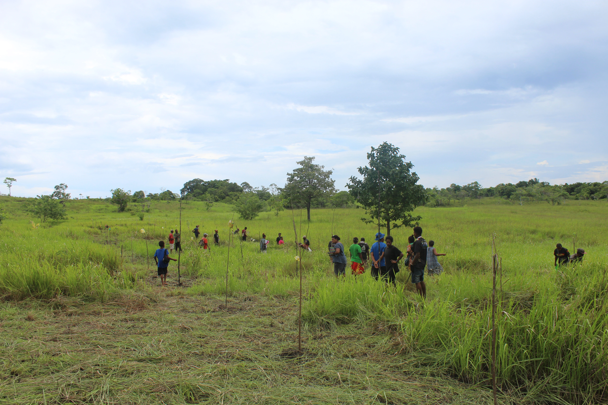

Driving conservation, restoration, and community development
Our programmes focus on protecting biodiversity, restoring degraded ecosystems, and strengthening communities across Cape Vogel. We combine traditional knowledge with modern conservation practices to ensure long-term sustainability for both people and the environment.
Restoring degraded forest ecosystems and improving biodiversity.
Protecting coastal ecosystems that support fisheries and livelihoods.
Rebuilding reef systems affected by bleaching and environmental stress.
Improving income opportunities through sustainable practices.
Providing knowledge and skills for conservation and development.
Building leadership and capacity for future generations.
Rising sea levels and changing weather patterns threaten communities.
Marine ecosystems are under pressure from warming oceans.
Population growth is increasing demand on land and natural resources.
Our work is grounded in community participation and guided by traditional knowledge. We collaborate with local leaders, elders, and youth to design programmes that are culturally appropriate, sustainable, and impactful.
By integrating modern conservation techniques with local practices, we ensure that our initiatives are both effective and owned by the communities we serve.
Engage all 25 communities across Cape Vogel within five years.
Enhance biodiversity conservation and ecosystem restoration efforts.
Support communities in adapting to environmental and economic changes.